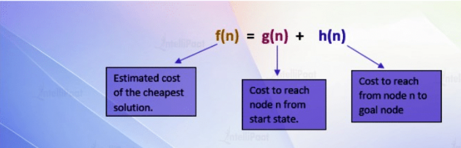
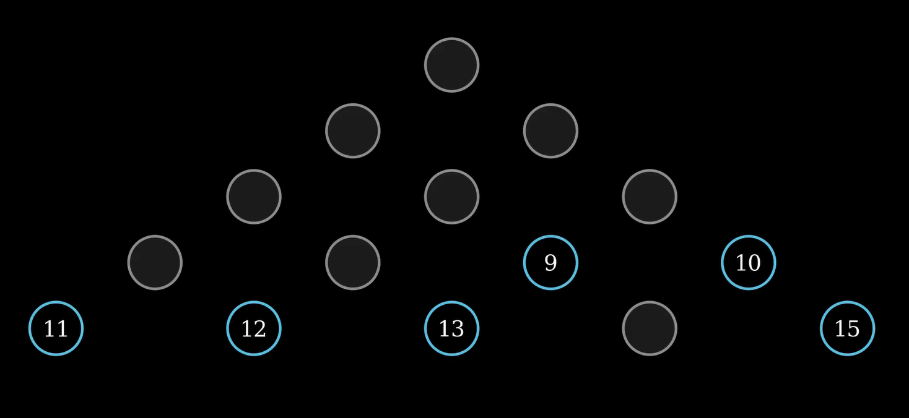
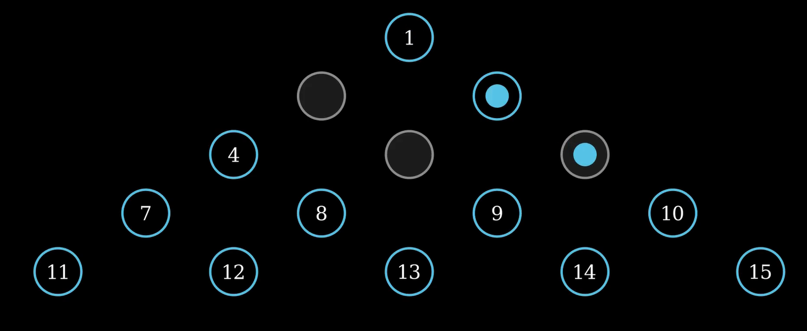
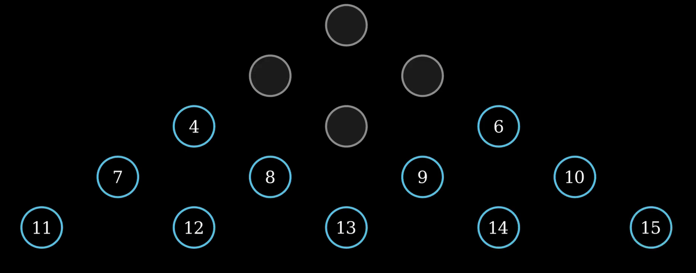
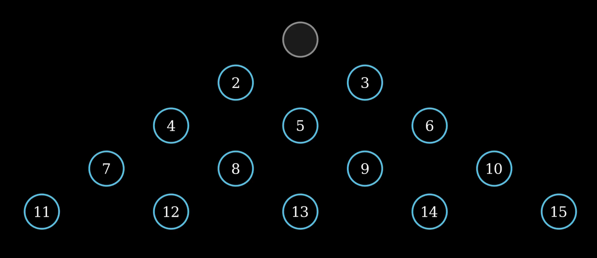
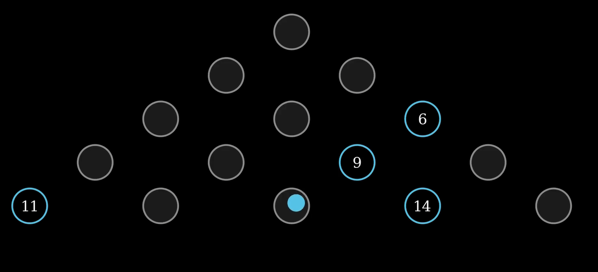
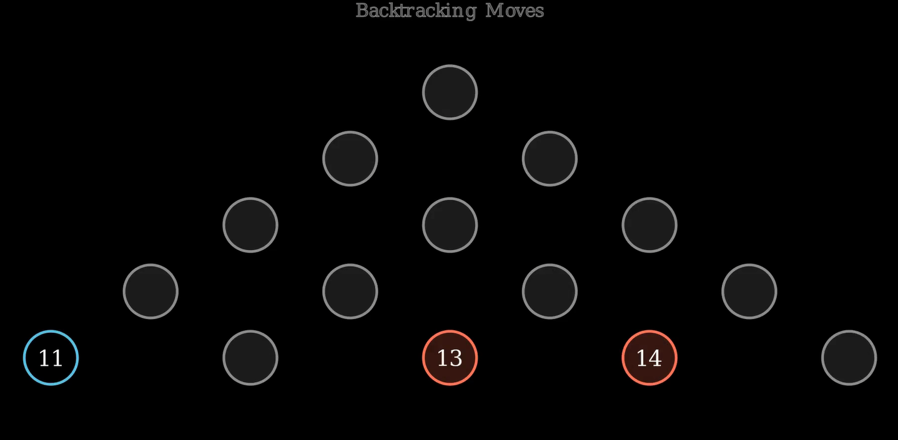
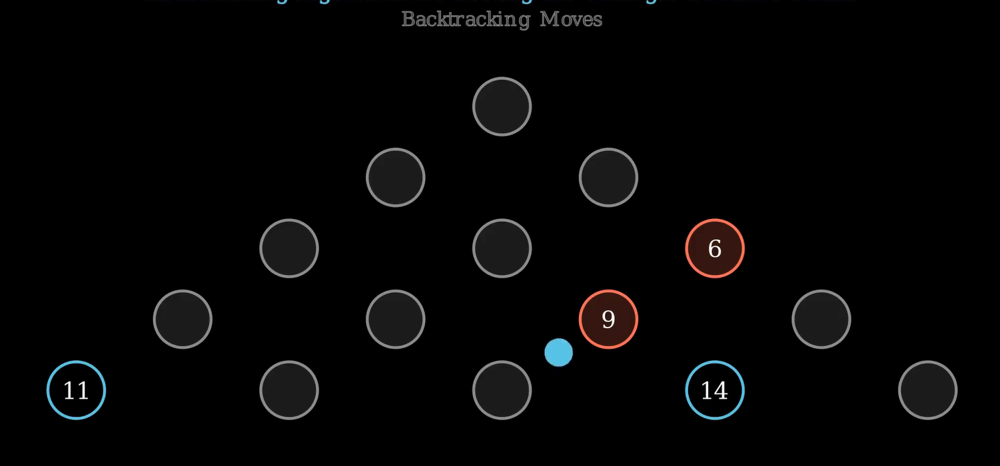
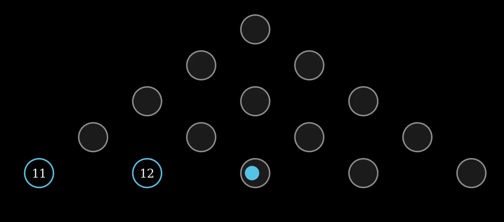
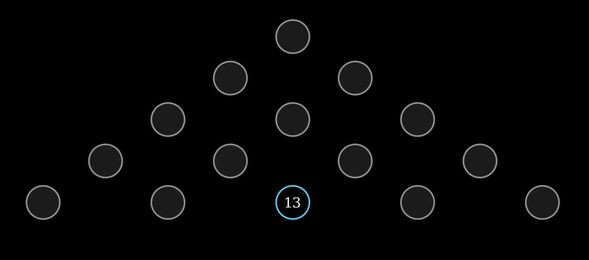

title: “A Backtracking in Triangle Peg Solitaire” format: revealjs: output-file: “index.html” theme: simple —
Objective of this Presentation
- Learn how to animate a backtracking algorithm using Manim.
- Visualize **A*-like pathfinding in the context of solving the Triangle Peg Solitaire** puzzle.
- Understand step-by-step animation creation, not just logic.
What is the A* Algorithm?
- A* is a graph traversal and pathfinding algorithm.
- It finds the shortest path from a start node to a goal node using a combination of:
- g(n): cost from start to node
n. - h(n): heuristic estimate of cost from
nto goal. Chooses path minimizingf(n) = g(n) + h(n). 
- g(n): cost from start to node
Why is A* Important?
- Combines efficiency and optimality (with admissible heuristics).
- Widely used in:
- Game development for NPC movement.
- Robotics for obstacle-aware navigation.
- GPS routing (e.g., Google Maps).
- AI systems where intelligent traversal is needed.
Example: A* in Games and Robotics
- Games: Used to compute AI paths avoiding obstacles.
- Robotics: Robots plan efficient movement in uncertain terrains.
- Logistics: Route optimization in delivery or warehouse systems.
The Triangle Peg Puzzle
- Board has 15 pegs arranged in a triangle.
- One peg is initially empty.
- Pegs jump over each other into empty holes.
- The goal is to end with one peg in the center.
We’ll animate a solving algorithm with backtracking to highlight decision paths and corrections.
🔧 Step 1: Setup Your Manim Scene
from manim import *
class PegGame(Scene):
# Your scene and animation logic will go here- Inherit from
Sceneto define the animation. - Manim lets you animate vector graphics using Python.
Step 2: Define Peg Positions
positions = [
(0, 2, 0), # Peg 1
(-1.5, 1, 0), (1.5, 1, 0), # Pegs 2, 3
(-3, 0, 0), (0, 0, 0), (3, 0, 0), # Pegs 4, 5, 6
(-4.5, -1, 0), (-1.5, -1, 0), (1.5, -1, 0), (4.5, -1, 0), # Pegs 7-10
(-6, -2, 0), (-3, -2, 0), (0, -2, 0), (3, -2, 0), (6, -2, 0), # Pegs 11-15
]- Defines the layout of the triangle board.
- These positions are used for drawing and animation.
Step 3: Draw the Board
def draw_board(self, board, highlight_reversed=False):
# Drawing logic here
# Filled pegs: blue circles
# Empty holes: gray circles
# highlight_reversed: red pegs for backtracking
# Number overlays for clarity- Filled pegs are drawn with blue circles.
- Empty holes are gray.
- If
highlight_reversed=True, backtracked pegs are drawn red. - Peg numbers are overlaid for clarity.

Creating the Pegs Visually
peg = Circle(radius=0.4, color=BLUE).move_to(pos)
self.add(Text(str(idx), font_size=24).move_to(pos))- Each peg is a
Circle. Peg number added usingText.
Step 4: Animate a Move
def play_move(self, peg, over, land, board, is_reversed=False):
# Animate a single jump move
# 1. Peg jumps over another
# 2. Jumped-over peg disappears
# 3. Peg lands on a new spotMove Animation
self.play(
MoveAlongPath(Dot(radius=0.2).move_to(start), Line(start, end)),
FadeOut(Dot().move_to(over_pos))
)- First line animates the jump.
- Second line fades out the peg that was jumped over.
- the attached screenshots indicates peg jumping over peg 5, then the second lines fades the peg that was jumped.
 
Step 5: Build the Construct Method
def construct(self):
# 1. Add title/subtitle
title = Text("Backtracking Algorithm for Solving the Triangle Solitaire Puzzle", font_size=22, color=BLUE).to_edge(UP*0.5)
subtitle = Text("Backtracking Moves", font_size=20, color=DARK_GREY).next_to(title, DOWN, buff=0.1)
# Add stroke to subtitle for better visibility
subtitle.set_stroke(color=WHITE, width=1, opacity=0.4)
# Apply blue edge-up effect on title
title.set_stroke(color=BLUE, width=1)
self.play(Create(title))
run_time=4
# 2. Define starting board
# 3. Animate the initial setup
# 4. Execute list of moves (correct → wrong → backtrack → continue)- Create a title using
Text:- Displays: “Backtracking Algorithm for Solving the Triangle Solitaire Puzzle”
- Font size is set to 22.
- Text color is
BLUE. - Positioned near the top edge of the screen using
.to_edge(UP*0.5).
- Create a subtitle:
- Displays: “Backtracking Moves”
- Font size is 20.
- Color is
DARK_GREY. - Placed just below the title using
.next_to(title, DOWN, buff=0.1).
- Improve subtitle visibility by applying a stroke (outline):
- White stroke (
WHITE) with width1and low opacity (0.4) so it stands out without being too bold.
- White stroke (
- Enhance the title appearance:
- Apply a
BLUEstroke to the title text using.set_stroke.
- Apply a
- Animate the title appearing on screen:
- Uses
self.play(Create(title))to draw the title text as an animation.
- Uses
run_time = 4is defined but not used in this snippet. (Could be intended for later animations.)
Step 6: Initial Setup
board = list(range(1, 16))
board.remove(1) # Make peg 1 empty
self.draw_board(board)- Board starts with 15 pegs.
- Peg 1 is removed (common starting state).
draw_board()renders this setup. 
Step 7: Animate Correct Moves
solution_moves = [(4, 2, 1), (6, 5, 4), ...]
for peg, over, land in solution_moves:
self.play_move(peg, over, land, board)- Each tuple is a move: (from, over, to).
- The scene animates moves sequentially.
- Short pauses allow viewer digestion.

Step 8: Show Wrong Path
wrong_moves = [(6, 9, 13), (13, 14, 15)]- These are intentionally bad moves.
- You’ll show the algorithm heading down an invalid path.
Key Idea: Visualize mistakes to prepare for backtracking.

Step 9: Animate Backtracking
for peg, over, land in reversed(wrong_moves):
board.remove(land)
board.append(over)
board.append(peg)
self.reversed_pegs = [peg, over]
self.draw_board(board, highlight_reversed=True)- Undoes the move by reverting the board state.
draw_boardis called again with red pegs to show reversal.

Step 10: Resume Correct Path
correct_moves_after_backtrack = [(6, 9, 13), (14, 13, 12), ...]
# Resume solving after backtracking.
# Continue until puzzle is solved or max depth reached.
Final Animation Touch
final_group = Group(*self.mobjects)
self.play(FadeOut(final_group, run_time=4))- Smooth fade-out of all elements.
- Ends animation cleanly.

Full Code Overview
The full code is available in the project folder and it combines: - Position setup - Drawing logic - Move animation - State management - Backtracking + visualization
Tips for Customization
- Add move numbers or highlight paths.
- Show decision trees alongside the board.
- Add sound effects for jumps and backtracking.
- Use
VGroup,Transform, andFadeTransformfor creative transitions.